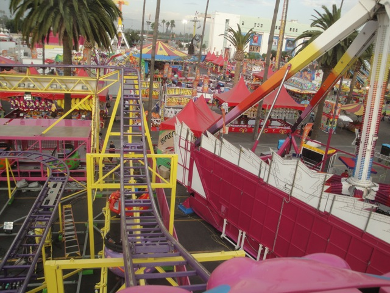
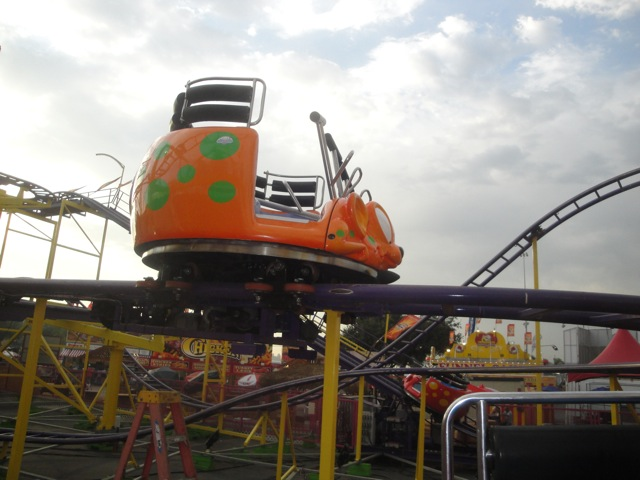
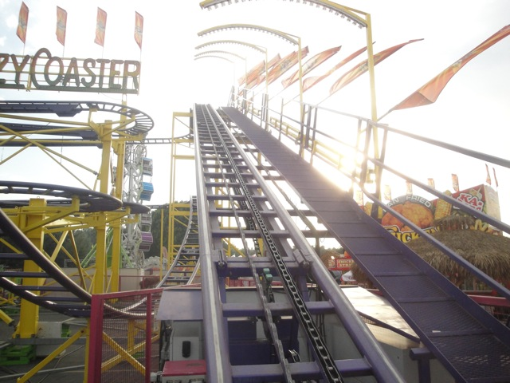
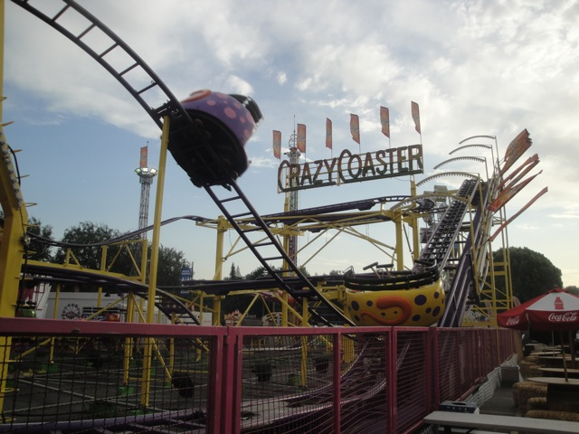
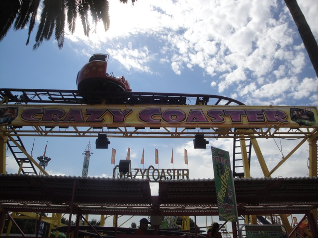

| |
Crazy Coaster Review

All right. We're here at the L.A County Fair, where we're going to review Crazy Coaster. The big coaster at the L.A County Fair and the carnivals spinning mouse. We get into our cars and away we go. We roll through a turn and through some straight track and then head up the lifthill. You head off the lifthill and into a turn. And of course, as we're rolling through the upper set of switch backs, theres no spinning. Typical. Usually these things don't spin until the second half. Same old spinning mouse, as usual. After the switchbacks, you head into a small drop and back up the small hill. This is fun. We then head into the biggest drop of the ride. We gain some speed as we dip to the ground. We then head into some double up thing which sadly, but not suprisingly, has no airtime. We then jolt around another turn and head into the second set of switchbacks. And this is where we start spinning. But here, the spinning is bad. I mean, its not THAT bad. It's certainly better than the spinning mouse at Mt. Olympus. But compared to the spinning mice at Six Flags Great America and even Coney Island, this is pretty boring. We're spinning, but its not that dizzying. And damn it!!! I wanna get dizzy!!! We then go through the final little dip and bump. This is where the ride really starts to get spinning. But unfortunetly after that, we rise up and turn into the final brakes. This is NOT one of the better spinning mice coasters. To a certain extent, I'd actually rather ride Pole Position over it if Pole Position is having a good day. But yeah, on a bad day, this wins. Its not a bad coaster, its just that there are so much more fun rides at the L.A County Fair like Tango, Speed, and Mega Drop that you can definetly skip this and you won't be missing too much. Give it a ride if you're interested, but don't feel bad if you miss it.
5/10
Location: American Fairs
Opened: Unknown
Built by: Zamperla
Last Ridden: September 13, 2018
I have ridden this exact same ride at the following parks.
Coney Island
Mt. Olympus
Six Flags America
Six Flags Great America
Tivoli Friheden
Crazy Coaster Photos





Home
|